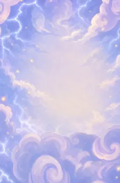

在当前版本中
因果报应的变化比对话更大。
光明、中立与黑暗的业力之路，会改变护盾的表现、预警信号、敌人的攻击性和 Boss 的阶段，所以故事会改变你的玩法。
版本状态 全力制作中所有十个对话世界
十个世界的全部对话背景，按照从 Ena 到 Deka 的下降顺序排列。


当前制作版 UI
当前版本中的关卡选择、对话和结算界面。
这是当前流程，按你遇到的先后顺序排列：关卡选择、对话、关键节点的选择，然后是胜利画面，或单独的失败画面。下面的所有画面都使用了正式制作中的 Unity 项目的美术资源。
天界路线在十个百级章节中选择生成的级别。
制作菜单映射了 100 个级别章节中的 10 个位置，并直接打开到选定的运行中。

 201
201对话就发生在地点之中。
角色立绘、地点美术和说话者名牌共用同一个竖向画框。


Shash
那么就继续吧-但不要以为这会很容易。Tria等待着您，这将使之前的一切都显得微不足道。
04 / 里程碑的选择
答案成为血统的一部分。
在地方级别 90 和 100 中，专门小组要求在对话解决运行问题之前做出“饶恕或杀戮”的决定。

放过
击杀
05 / 结果菜单
胜利则继续前进，失败则回到同一关。
当前版本有两个独立的结果状态：PanelWin 提供重播和下一级别，而 PanelOver 保留一个明确无误的重播操作。
胜利·PanelWin
下降通关
 重玩
下一关
重玩
下一关
重玩
下一关
对话角色
下山途中相遇。
所有 25 个具有有效制作开闭肖像对的角色都包含在下面。将鼠标悬停或聚焦卡片即可切换表情。


游戏概述
Ball is God?! 是一款在旋转高塔中不断下坠的硬核街机游戏。
核心构想
带着 Espa 走下一座神圣之塔。一次失误就可能让这一局结束，而你做出的重大选择会改变这个世界的玩法。
当前版本
实现了十个地点场景、程序塔生成、连击粉碎、滑动盾牌、Boss 配置、分支对话、制作菜单和表情肖像。
目标受众
喜欢高难度手机街机游戏、高风险高回报的时机把握和 Boss 战，并且希望有故事可追的玩家。
状态
积极制作中。近期的工作涵盖运行时系统、世界美术、测试，以及游戏在手机上的实际玩法。
特点
在 Ball is God?! 中你要做什么
拖动旋转下降
水平阻力使塔围绕自动下落的 Espa 旋转，排列间隙、危险和安全平台。
硬核街机压力
只要有一次不设防地中招，这一局就结束了，所以你必须看清高塔，把握好每一步的时机。
Boss 和神话世界
十个地点场景各有各的 Boss，把故事从一个世界带向下一个世界。
能改变规则的选择
仁慈、力量和业力改变对话、护盾规则、敌人侵略、电报和 Boss 阶段。
玩法循环
Ball is God?! 玩法
- 步骤01看清下降
下坠时留意接下来的平台、缝隙和危险物，寻找安全的时机。
- 步骤02旋转高塔
水平拖动使世界围绕 Espa 转动，对齐安全平台或故意的间隙。
- 步骤03风险与粉碎
跳过三个平台进行组合粉碎，然后突破建筑物，同时护盾覆盖一个致命错误。
- 步骤04选择结果
仁慈和力量塑造业力、对话和游戏规则，并融入到敌人和 Boss 身上。
故事/世界
一座神话之塔，你的选择会一路跟你下坠。
Ball is God?! 始于童年对移动垂直下降街机的迷恋：阅读间隙、快速反应和本能生存。
这种形式还能承载更多：Boss、个性鲜明的角色、一段故事和道德上的张力。当前的项目让 Espa 穿过十个地点场景和一群奇特的角色，而选择会同时改变故事和玩法。
于是目标变成了一款简单的垂直下降街机游戏，既有 Boss 战的压迫感，又有剧情向 RPG 那样的选择后果。
- 愿景
- 带有神话故事的旋转高塔街机游戏
- 当前世界范围
- 十个地点和Boss配置
- 故事阶段
- 完整的长篇故事草稿
- 制作状态
- 全力制作中
一览
拖动即可操作，再配上会改变规则的故事。
拖动旋转的操作反应迅速。其余的乐趣，来自神话世界、Boss 和会改变玩法的选择。
当前版本已经集齐了确定性高塔生成、高风险高回报的重击、一击失败、Boss、分支对话，以及会改变玩法的业力。
- 类型
- 剧情向垂直下降街机
- 平台目标
- iOS / Android
- 单次游玩形式
- 考验技巧的快节奏对局
下载素材
Ball is God?! 媒体和创作者资源
供新闻报道、发行商评审和商店页面参考使用的 WebP 预览。全分辨率的源文件可按需提供。
品牌与角色
游戏图标加上所有25个当前角色，具有完整的制作对话肖像。名称与 Unity 本地化键匹配。
Espa玩家角色肖像。
Revla制作对话肖像。
Shash制作对话肖像。
Shush制作对话肖像。
Shish制作对话肖像。
Gigo制作对话肖像。
Goga制作对话肖像。
Giga制作对话肖像。
Askold制作对话肖像。
Miras制作对话肖像。
Hih制作对话肖像。
Heh制作对话肖像。
Hah制作对话肖像。
Musya制作对话肖像。
Dusya制作对话肖像。
Susya制作对话肖像。
Vladus制作对话肖像。
Frisha制作对话肖像。
Luren制作对话肖像。
Kuren制作对话肖像。
Don Yagon制作对话肖像。
Lurya制作对话肖像。
Khleya制作对话肖像。
Varon制作对话肖像。
White制作对话肖像。
菜单背景
天体等级选择系统使用的当前制作艺术品。
 天体菜单
天体菜单垂直下降世界
完整的十个当前位置背景集，从 Ena 到 Deka 排序。
 01·天空世界Ena 垂直下降背景。
01·天空世界Ena 垂直下降背景。
 02·太空世界Dyo 垂直下降背景。
02·太空世界Dyo 垂直下降背景。

03·风暴世界Tria 垂直下降背景。 04·雪世界Tessera 垂直下降背景。
04·雪世界Tessera 垂直下降背景。
 05 · 火山世界Pente 背景，游戏中带动画效果。
05 · 火山世界Pente 背景，游戏中带动画效果。
 06 · 海洋世界Eksi 垂直下降背景。
06 · 海洋世界Eksi 垂直下降背景。
 07 · 沙漠世界Epta 垂直下降背景。
07 · 沙漠世界Epta 垂直下降背景。
 08 · 森林世界Ohto 垂直下降背景。
08 · 森林世界Ohto 垂直下降背景。
 09 · 洞穴世界Ennea 垂直下降背景。
09 · 洞穴世界Ennea 垂直下降背景。
 10 · 地狱世界Deka 垂直下降背景。
10 · 地狱世界Deka 垂直下降背景。
故事街机背景
完整的对话地点集：光之厅以及所有十个世界的背景。
 00 · 光之殿
00 · 光之殿 01 · 天空对话
01 · 天空对话 02 · 空间对话
02 · 空间对话 03 · 风暴对话
03 · 风暴对话 04 · 雪的对话
04 · 雪的对话 05 · 火山对话
05 · 火山对话 06 · 海洋对话
06 · 海洋对话 07 · 沙漠对话
07 · 沙漠对话 08 · 森林对话
08 · 森林对话 09 · 洞穴对话
09 · 洞穴对话 10 · 地狱对话
10 · 地狱对话
Ball is God?! 常见问题解答
关于 Ball is God?! 的常见问题
Ball is God?! 是一款什么样的游戏
一款硬核垂直下降街机游戏。你要围绕不断下坠的 Espa 旋转高塔，跳过安全落点为重击充能，一路冲破神话世界。
Ball is God?! 要怎么玩？
水平拖动以旋转塔，跳过三个平台进行粉碎，当冷却护盾必须吸收致命一击时垂直滑动。
Ball is God?! 已经发布了吗？
还没有。它正在积极制作中，涉及运行时系统、世界美术、故事内容和测试。目前没有公开的发布日期。目标平台是 iOS 和 Android。
Ball is God?! 有什么不同？
它把高风险高回报的街机压迫感，与十个地点，以及会改变对话、敌人、攻击预告、护盾和 Boss 的业力结合在了一起。
Ball is God?! 是谁制作的？
WillowinWorlds 是一家制作手机益智与街机游戏的独立工作室。
我可以使用 Ball is God?! 的媒体素材吗？
可以，用于新闻报道、发行商评审和商店参考。源文件除非你向我们索取，否则不会公开。
Ball is God?! 开发日志
何时更新了什么
- 世界地面与危险要素验证
角色表现、确定性生成和尖刺陷阱，经历了一轮视觉与验证的综合打磨。
- 2026 年 7 月制作版 UI 与角色优化
关卡选择、通用的操作控件、竖向对话画框和成对的角色表情现已就位。
- 2026 年 2 月项目范围审查
团队完成了主要故事整合过程，并审查了项目的整体规模：十个世界、道德选择、Boss 和多重结局。
- 2025年4月-5月故事重写和能力
整个故事被重写，人物能力得到提升，道德后果变得更加清晰。
- 2024 年 8 月故事走向开始
团队认为 Ball is God?! 不该只是一款简单的下降街机游戏，于是加入了神话故事和道德抉择的构想。
- 2024 年 7 月原创概念
这个项目最初是工作室的第一个游戏创意：一款在神圣高塔中飞速下坠的垂直街机游戏。
- 当前版本街机与故事合于一个版本
旋转高塔下降、连击重击、滑动护盾、Boss、对话和业力，如今已在同一个版本中协同运作。